BX Tacho戰鬥陀螺發射轉速計 使用說明
適用韌體 v2.3 以上
BX Tacho 夾在 Beyblade X 發射器上，發射時會自動量出陀螺的轉速（RPM，每分鐘轉幾圈），顯示在小螢幕上。不用按任何按鈕！螢幕上每個畫面長什麼樣子，請看第 5、6 頁。
安裝示意圖
拉條發射器
旋風發射器：卡榫比較靠近把手，BX Tacho 幾乎對齊發射器的右邊
從上面看：把 BX Tacho 疊在發射器上面，用上下兩個卡扣扣住發射器兩側的卡榫；螢幕上的字是正的時候，發射器的把手在右邊。不同發射器的卡榫位置不一樣，BX Tacho 的位置也會不同。
左手模式：如果 BX Tacho 設定成左手模式（例如收到時就設好了），螢幕會上下顛倒。這份說明都以「正常」方向為準；可在網頁 App 的「螢幕方向」選「正常」改回來。
怎麼使用
1把 BX Tacho 夾到發射器上，把電源開關往下撥開機。先出現開機畫面。
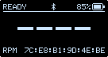
2左上角顯示 READY：準備好了。
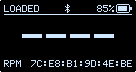
3把陀螺裝上發射器，變成 LOADED。
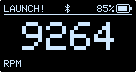
4像平常一樣拉動拉條發射！顯示 LAUNCH! 和現在的轉速。
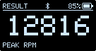
5發射完顯示 RESULT，大數字是這次的最高轉速。
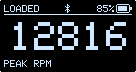
6再裝上陀螺，就可以發射下一次。上一次的成績會留著。
白色發射器小提醒
BX Tacho 開機時先當作「黑色發射器」。用白色外殼的發射器時，第一次裝上陀螺後請等 3 秒再發射，它會自動認出是白色發射器。在那之前，沒有裝載陀螺的白色發射器可能會顯示 LOADED，這是正常的。
注意：裝陀螺和拉動拉條發射時，發射器的底部要朝下（平常發射的方向），陀螺裝載偵測才會準確。底部朝上的話，小柱子會因為重力一直停在上面，BX Tacho 會以為陀螺一直裝著。
提醒：每個陀螺發射器的尺寸都會有一點點誤差（公差），有時可能讓 BX Tacho 量不到轉速，或判斷不出陀螺有沒有裝上。如果遇到這種情況，歡迎將問題反饋給作者：github.com/dazchi/bx-tacho/issues。
藍牙開啟、關閉與連上網頁
BX Tacho 使用說明
開啟／關閉藍牙
藍牙讓手機或電腦的 App（或網頁 dazchi.github.io/bx-tacho）看到你的發射紀錄。不用藍牙時可以關掉，比較省電。
1開機，等螢幕左上角出現 READY（或 RESULT）。
2把陀螺裝上、拿下，連續做 5 次。不用陀螺也可以：用手指按一下發射器底部中間的小柱子再放開，一樣連續 5 次。動作要快，每次不要停超過 1 秒多。
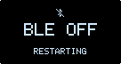
3螢幕出現 BLE OFF（關閉）或 BLE ON（開啟），然後自動重新開機。
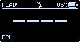
4看上方中間的藍牙符號：被劃掉就是關閉了。要再打開，重做一次就好。關機後也會記住。
不用陀螺時，用手指按發射器底部中間的小柱子（步驟 2）
注意：裝上／拿下陀螺，或按／放小柱子的時候，發射器的底部要朝下。如果底部朝上，小柱子會因為重力一直停在上面，BX Tacho 會以為陀螺一直裝著，這樣就切換不了藍牙。
用藍牙連上網頁 App
- BX Tacho 開機，確認藍牙是開著的（上方中間的藍牙符號沒有被劃掉）。
- 用 Chrome 打開 dazchi.github.io/bx-tacho（電腦也可以用 Edge）。不用安裝任何東西。
- 點上方的「藍牙」分頁，再按藍色的「透過藍牙連線」按鈕。
- 在跳出的清單裡選 BEYBLADE_TOOL01，按「配對」。
- 連上後，BX Tacho 螢幕上方中間的藍牙符號會變成 （兩旁多了小點）。網頁上你會看到最新的發射轉速、最高紀錄、發射次數、電量，下面還有發射曲線和最近 50 次的發射。每次發射完都會自動更新。
手機只能用 Android
在手機上，網頁 App 只支援 Android 手機的 Chrome。iPhone、iPad 的瀏覽器都不支援這種藍牙連線，所以無法使用。電腦請用 Chrome 或 Edge。
找不到 BX Tacho 時：確認手機的藍牙已開啟（有些手機還要打開「定位」），並靠近一點再試一次。
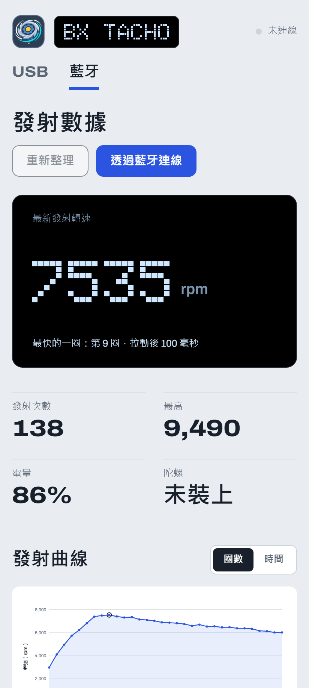
連線後的畫面
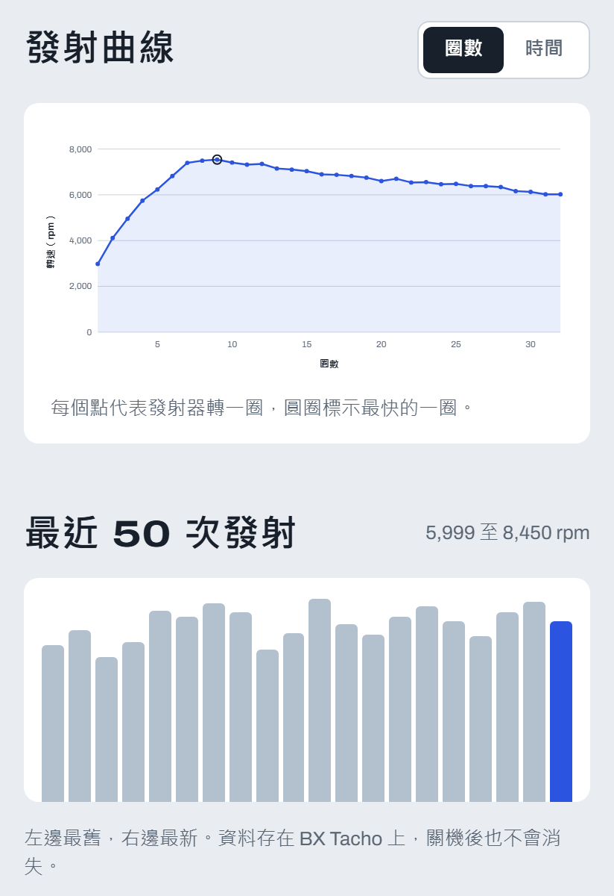
往下捲：發射曲線與最近 50 次
用手機掃描打開網頁 App 藍牙連接頁面
更新軟體透過藍牙或 USB
BX Tacho 使用說明
有新版本時更新軟體（韌體），可以修正問題、加入新功能。更新不會刪掉發射紀錄和設定。如果過程中出了問題，BX Tacho 會保留原本的軟體，再試一次就好。
透過藍牙更新（推薦）
- 先把 BX Tacho 充電到 50% 以上，或一邊插著 USB 線一邊更新。電量不夠的話網頁會提醒你。
- 照第 3 頁的步驟，用藍牙連上網頁 App。
- 往下捲到「更新韌體」，右上角會顯示 BX Tacho 目前的版本。
- 按「使用最新版本（v…）」。網頁會下載最新的軟體，並自動檢查檔案沒有壞掉。
- 按藍色的「透過藍牙更新」。
- BX Tacho 螢幕會出現 6 位數代碼。在網頁跳出的「輸入代碼」視窗輸入，按「解鎖」。
- 等大約 1 分鐘。BX Tacho 螢幕顯示 FIRMWARE UPDATE 和百分比，網頁也有進度條。這時不要關機，也不要關掉或重新整理網頁。
- 螢幕出現 DONE，BX Tacho 會自動重新開機。開機畫面的版本號變成新的，就完成了！
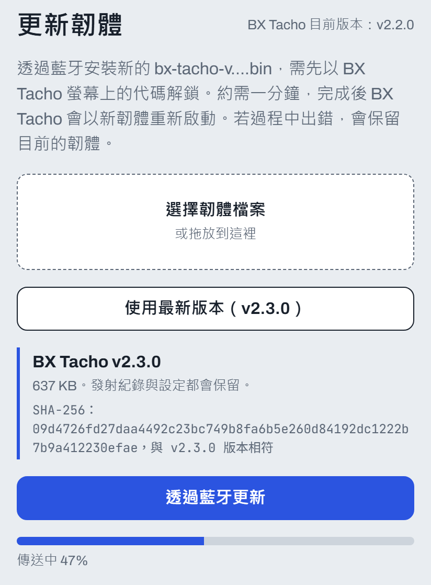
網頁的「更新韌體」（步驟 3～5、7）
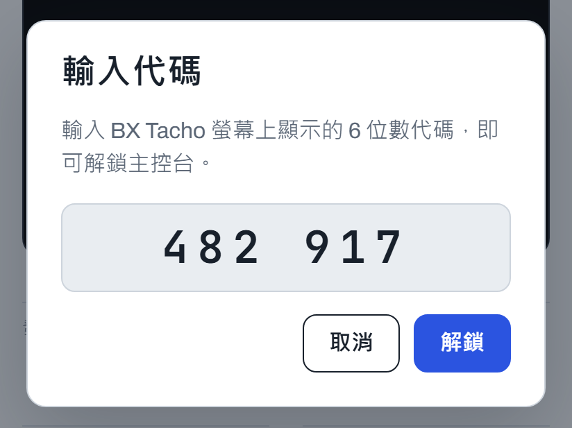
輸入代碼（步驟 6）
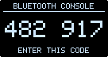
步驟 6：代碼把螢幕上的 6 位數字輸入到網頁（每次都不一樣）。
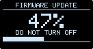
步驟 7：更新中顯示 DO NOT TURN OFF：千萬不要關機。
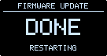
步驟 8：完成接著自動重新開機。
用 USB 線更新（電腦）
- 在電腦用 Chrome 或 Edge 打開 dazchi.github.io/bx-tacho，點「USB」分頁。
- 用 USB-C 線把 BX Tacho 接到電腦。
- 在「更新韌體」按「使用最新版本（v…）」，再按「更新韌體」。跳出視窗時，選 BX Tacho 的 USB 裝置，按「連線」。
- 等它寫入完成、自動重新開機。過程中不要拔線。
螢幕畫面圖解開機與發射
BX Tacho 使用說明
開機時
開機畫面BX TACHO 和軟體版本號。
製作者接著出現一下，然後就可以使用了。
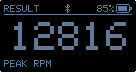
螢幕變暗30 秒沒有動作會變暗，2 分鐘後關掉。裝上陀螺就會再亮。
發射的步驟
上排的文字是狀態，中間的大數字是轉速，右上角是電量。
1READY 準備好還沒發射過時顯示 ----。右下角是這台的藍牙地址。
2LOADED 陀螺裝好了把陀螺裝上發射器，就會變成這樣。
3LAUNCH! 發射中拉動拉條時，大數字是現在的轉速。
4RESULT 結果大數字是這次發射的最高轉速（PEAK RPM）。
5再裝上陀螺上一次的成績還會留著，直到下一次發射。
螢幕畫面圖解電池、藍牙與其他畫面
BX Tacho 使用說明
電池（右上角）
 剩下的電量電池圖示裡的格子越多，電越多。
剩下的電量電池圖示裡的格子越多，電越多。
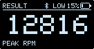
LOW 電快用完了請盡快充電。
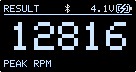
充電中閃電符號，旁邊是電池電壓。
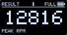
FULL 充飽了可以拔掉充電線。
藍牙（上方中間）
 藍牙開啟App 可以找到它。
藍牙開啟App 可以找到它。
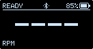
已連上 App藍牙符號兩旁多了小點。
藍牙關閉藍牙符號被劃掉。
其他畫面
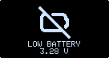
沒電了電池耗盡，會自動進入休眠保護電池。
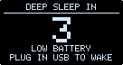
休眠倒數插上 USB 充電，就會醒來。
藍牙開／關短時間內連續裝上、拿下陀螺（或按放發射器底部中間的小柱子）5 次，會切換藍牙並重新開機。
更新軟體中千萬不要關機，等它自己重新開機。
注意事項
- 不要讓它淋到水或摔落。
- 內含鋰電池，請勿擠壓或放在高溫的地方（例如夏天的車裡）。想拆開自己動手改裝的話請務必小心，別刺破或短路電池。
- 長時間不用時，請關機並每幾個月充一次電。
- 螢幕顯示 DO NOT TURN OFF 時，千萬不要關機。